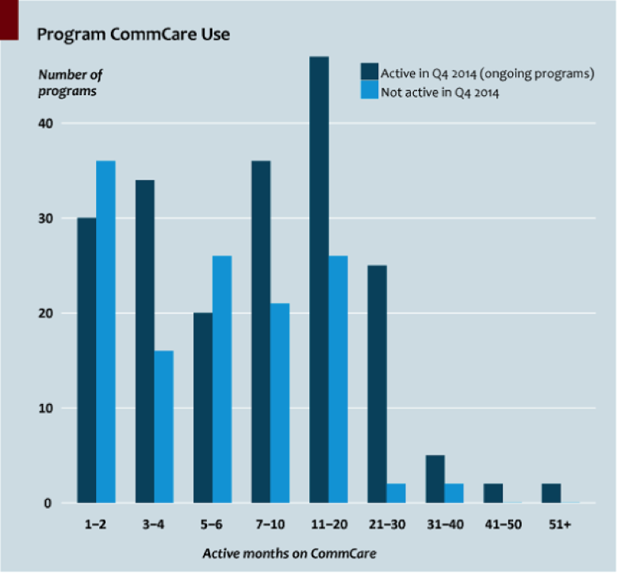

In an effort to reduce gang-based violence and murder in one of Cape Town’s most gang-affected communities, the CeaseFire Hanover Park project launched in late 2012. Using Dimagi’s CommCare platform, the Safety Lab built a system for CeaseFire to capture data on evolving trends in gang violence more efficiently, so the program can better predict, and try to prevent, the next attack.
CeaseFire Hanover Park
CeaseFire Hanover Park is a gang-violence intervention and prevention program in a Cape Town community plagued by high levels of gang-related violence. In 2012 and 2013, the year the program launched, the police precinct in which Hanover Park sits recorded 71 murders for an area of 53,911 people, 34,625 of whom live in Hanover Park. The program seeks to reduce violence by training and deploying field workers who act as outreach workers and “violence interrupters.” Most are reformed ex-gang members trained to mediate conflicts between gangs on the streets before they turn violent. The system has also freed field workers to focus on intervention and prevention work rather than spending countless hours on paper-based logistics in the office.
Why trend data matters
Detecting and interrupting planned violence is a key component of CeaseFire, and it relies on accurate, up-to-date trend data. An area that experiences a sudden increase in threats of violence is more likely to see a future increase in attempted murders; an area with a spike in attempted murders is more likely to see a rise in actual murders. To prevent this escalation, CeaseFire increases the number of field workers in an identified risk area to help mitigate conflict and reduce the likelihood of a gang-related murder.
The problem with paper
Previously, data collection was done on paper forms that required outreach workers to fill in paperwork daily, case by case, from a remote office. Once completed and filed, the forms had to be recorded on a spreadsheet and plotted on a map before trends could be spotted and acted upon. The system only works at maximum impact if data is recorded accurately, consistently, and promptly. The street is an inopportune place to do paperwork: carrying a clipboard can compromise field workers’ mediation work by undermining the trust they have with the community. As a result, the paper-based system demanded that field workers spend significant time in the office, exactly when periods of high violence required them on the streets.
Before CommCare, CeaseFire Hanover Park had significant problems with its violence-prediction system. Completed forms piled up waiting to be captured because active presence on the street took priority during times of high violence. Field workers also submitted forms late, often many days after an event, creating a lag that reduced the accuracy of the data, the longer the gap between an event and its recording, the less fresh it was in their minds.

How CommCare helps
To streamline data collection, a CommCare app was developed featuring the five forms most commonly used by field workers to record violence-prevention interventions, threats of violence, high-risk individuals, and the time and location of shootings. Paper forms tend to be long, and their heavy reliance on text is less effective than the combination of text and simple symbols that the CommCare tool allows. Simple icons were developed for each question, so that once a field worker is acquainted with the forms, completing them is greatly expedited. The app was deployed on Android devices for a simple interface that resonates with field workers’ comfort using their own mobile phones. The CommCare app has helped to:
- Streamline and enhance the efficiency of the data-capture process.
- Incentivize field workers to relay information shortly after an event occurs.
- Increase the ease of filling in forms and the accuracy of the information captured.
- Make data on the real-time situation on the street immediately accessible.
About the author: Douglas is a researcher at The Safety Lab, an innovation hub and test centre based in the Western Cape province of South Africa that aims to catalyse social innovation and develop effective, street-ready safety solutions.
See what CommCare can do for your program
Talk with our team about digitizing service delivery and monitoring for your frontline workforce.
Get in touch